Jellyfin on a Raspberry Pi 4 - The Complete Setup
If you're like me, you have tons of music stored in Google Play Music. So the September 2020 shutdown of Google Play Music was a real bummer to me. Google allowed me to move my music to YouTube Music, but let's be real, YouTube Music is subpar at best. I carry an Android smartphone, and on Android the YouTube Music app stops playing when you lock the screen unless you are paying customer. So there's no going for a run with music, there's no walking the dogs with music, there's no driving with music, etc. You get the picture.
So I set out on a quest to find a replacement. A lot of my friends really like Plex but I've tried Plex before and I didn't love it. I spend a couple of weekends setting up Nextcloud but the music player was just not good, no, it is bad. I had almost given up, then as I was listening to the Linux Unplugged podcast one afternoon in Dec they mentioned Jellyfin. I thought to myself, could this be it? Could this work?
I'm happy to report that this is the BEST I've seen so far and as of now I have it fully working. I have Jellyfin running on my Raspberry Pi 4, with approximately 78 GB of music. It is exposed via fully qualified domain so that I can listen from my phone or computer anywhere in the world with an internet connection. It works on my browser, has and Android app and iOS app. I have set up accounts for myself, my wife and my kids, so everyone can create their own playlists.
Without further ado, let's hop in and go through the setup!
Raspberry Pi Setup
I'm running Ubuntu 20.04 on my Raspberry Pi but I'm sure that Raspbian will work as well. You will need to have root access, docker installed and have SSH enbabled on your Pi, so if you don't have that done stop here and get that enabled. Also, I would highly reccomend you setup a static IP address on your Pi and have your music loaded on your Raspberry Pi as well. I have my music stored right on the SD card that contains my OS in my home directory, you may store yours on an external drive, either way you will need the file path to the music directory.
Install Jellyfin
To install Jellyfin you'll need to run the following commands, remember you're doing this via SSH on your Raspberry Pi.
sudo apt install apt-transport-https
wget -O - https://repo.jellyfin.org/jellyfin_team.gpg.key | sudo apt-key add -
echo "deb [arch=$( dpkg --print-architecture )] https://repo.jellyfin.org/$( awk -F'=' '/^ID=/{ print $NF }' /etc/os-release ) $( awk -F'=' '/^VERSION_CODENAME=/{ print $NF }' /etc/os-release ) main" | sudo tee /etc/apt/sources.list.d/jellyfin.list
sudo apt update
sudo apt install jellyfin
Now open a new tabl on your browser and navigate to the following URL:
http://<raspberry_pi_ip_address>:8096
You will be greeeted with Jellyfin page! Here you'll need to go through the setup process, the first still will be to choose the language and then click Next.
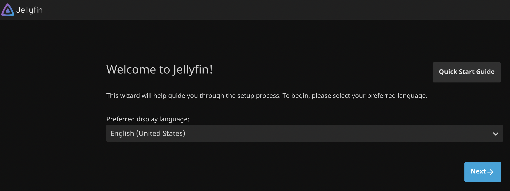
Create a Username and Password, then click Next.
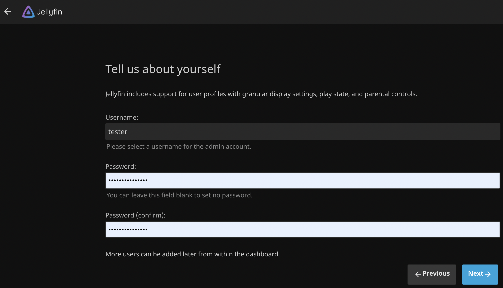
I won't go through every step, but will go through a few that are important. Click Add Media Library and then you'll need to enter the path to your music (remember we mentioned you would need this path).
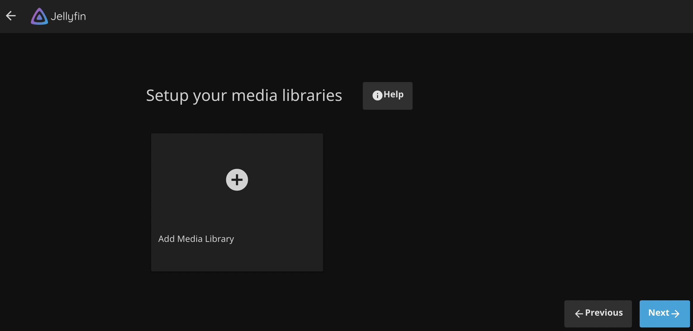
Enter the path to your music, then tab and scroll down.
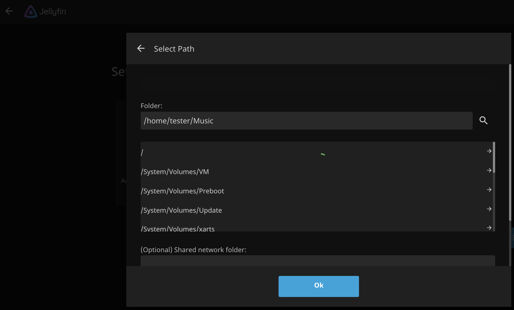
When I first setup JellyFin I only selected MusicBrainz but didn't get all of my album art, song titles, etc. I went back later on and selected both MusicBrainz and TheAudioDB and then had to wait for all of my musc to be scanned again. I'll save you from that pain, go ahead and select both options here in both of the areas below. Scroll on down and choose Nfo and save artwork in your media folders. After that click OK.
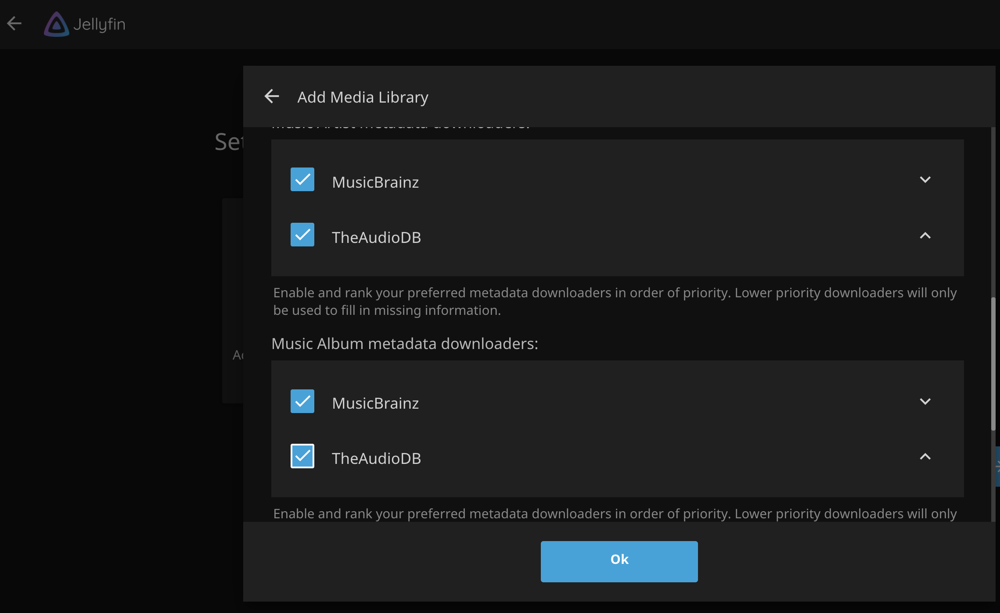
Your music library is setup and we are almost done. Click Next.

On the Configure Remote Access page, leave Allow remote connections to the Jellyfin Server selected but do not check Enable automatice port mapping. Then click Next.
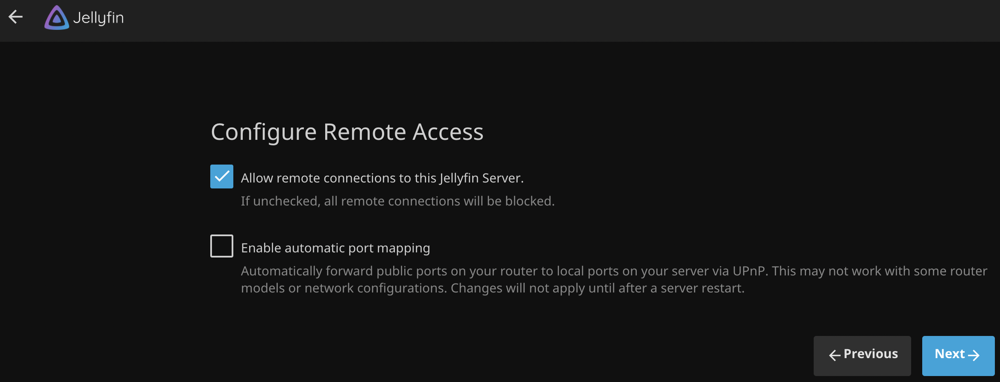
You did it! Click finish to complete the setup.
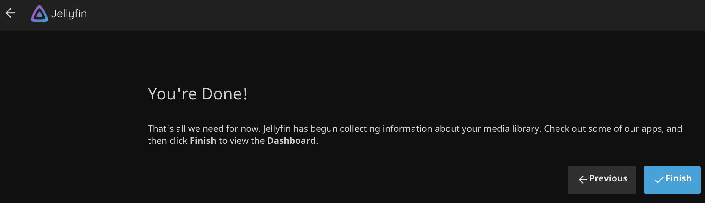
After that you'll be asked to login with your Username and Password. It will take a while to download all of the music metadata and artwork. Till then you'll see a lot of blue boxes but Jellyfin is fully functional and setup. At least it is inside your network.
We could stop here and call it done. But the moment you walk out of WiFi range then no more music for you. What you really want is to expose your Jellyfin setup to the outside world, securely. So let's get started on that part. I promise it's not that hard and it won't even hurt.
Router Setup
This will vary wildly depending on the router that you have, but in short you want to forward ports 80 and 443 and to your Raspberry Pi.
My router is by Netgear, so to accomplish this I log in to the router, go to Advanced > Advanced Setup > Port Forwarding/Port Triggering. Select HTTP from the Service Name dropdown, fill in the Raspberry Pi IP address and click Add, this opens up port 80 to my Raspberry Pi. Next click Add Custom Service and then fill out the form for port 443 and my Raspberry Pi IP address. After this is done make sure the page is saved on your router to preserve the open ports.
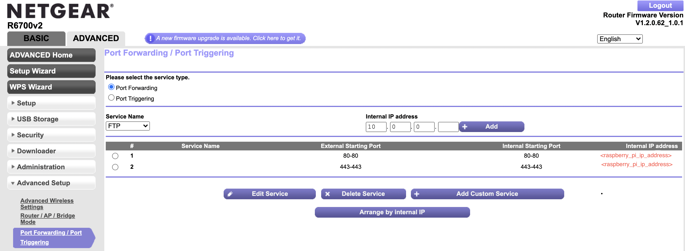
As I mentioned this will very greatly depending on the router that you have but the process should be somewhat similar. You can Google how to forward ports on your specific router and get this step done.
Cloudflare DNS Setup
At this point we will setup Cloudflare to route traffic to your IP address. You will need a custom domain for this part. If you don't have one already you can purchase a custome domain from many different sources. I've used several domain registars in the past but currently I prefer Google Domains, https://domains.google.com/. Pick one that works for you and get it setup. You will need access to the domain during this step.
After you have your domain registered then we'll setup Cloudflare's DNS service. You will need to create an account on Cloudflare, the free version works just fine for what we need to do. So navigate to Cloudflare and create an account.
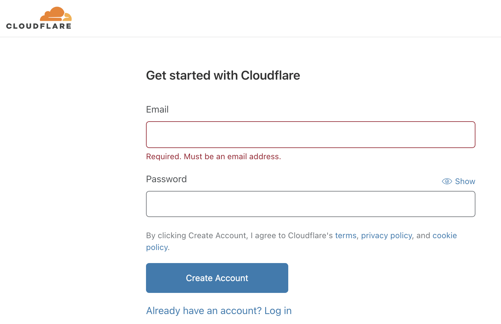
Next you'll need to enter your domain name, such as example.com (you'll not enter in http://, just the domain name).
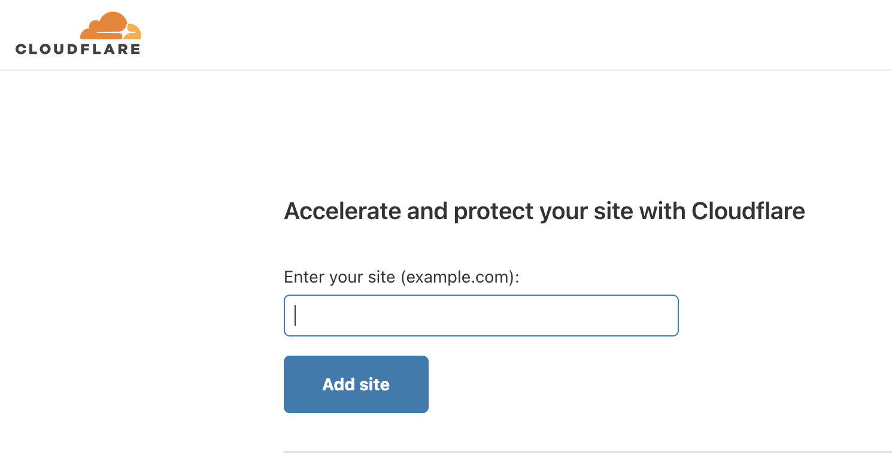
After you have entered your domain you will be taken to a page to select your account type, just scroll down and choose the free plan and click Continue
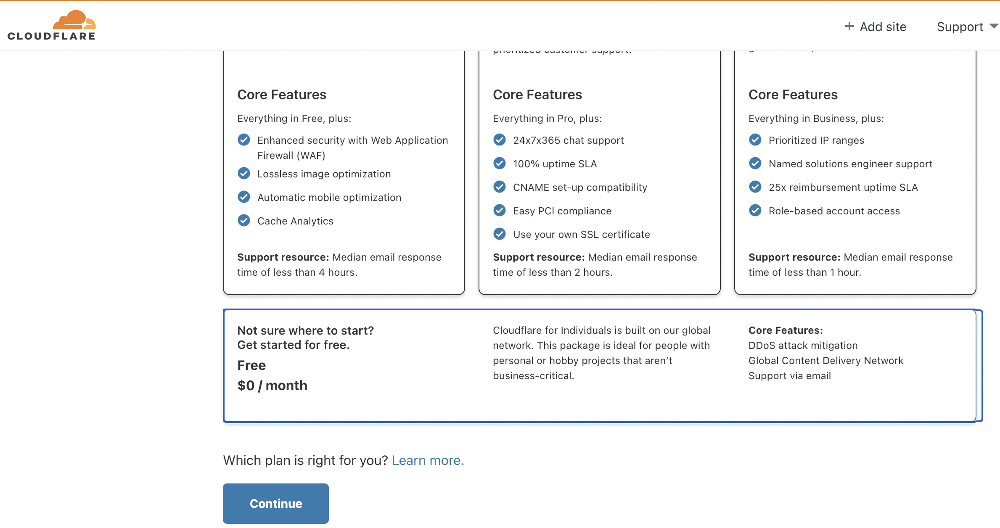
After you have selected your plan you'll be asked to verify your DNS records, skip this page for now and click Continue. Then you'll be presented with the Change your nameservers screen. This is a very important step. You'll need to remove your current nameservers and replace them with Cloudflare's nameservers. Here's what mine looked like -
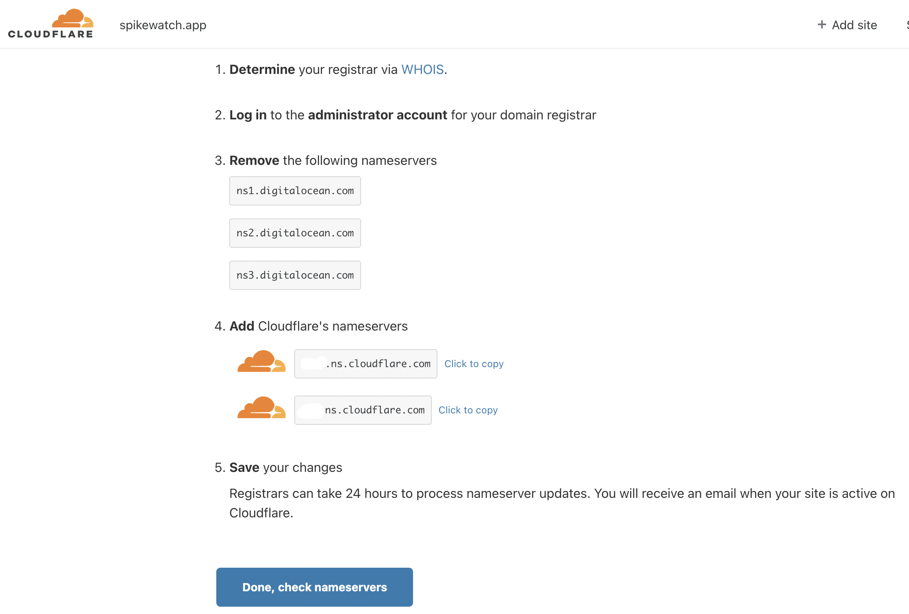
Just replace your current nameservers with the new nameservers in step 4 and save them on our registar page. This will vary depending on which service you use, but it should be pretty easy to do. You may have 2 or 3 nameservers in your current service, and you'll be replacing them with the two that Cloudflare provides. Notice the warning that is in step 5, it could take 24 hours but in reality mine were ready right away. You're milage may vary on this step, so you may have a wait a little bit. Click Done, check nameserves and see if Cloudflare can validate, once validated you'll be taken to an overview page.
Select the SSL/TLS tab and make sure Full is selected.
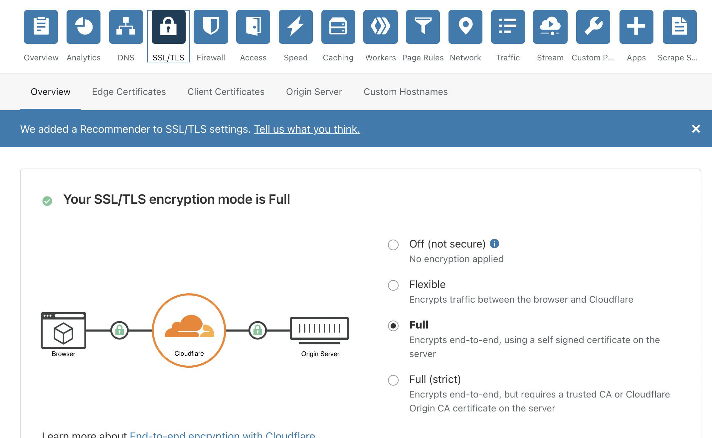
Now you'll need to change the DNS settings to point to your router. For this step you need the IP address for your home router. An easy way to get this is to go to Google and type in "what is my ip address". A word of warning, your IP address could change unless you have a static IP address from your service provider, so you may have to update this in the future. I use DynDNS but I have not figured out how to link that service to Cloudflare (yet). You'll need to setup a CNAME record for jellyfin (this is your subdomain that will be pointed to your Raspberry PI, so it can be anything you want but since we're setting up Jellyfin, I went with jellyfin) and your domain name and an A record for your domain name and home IP address.
Lastly, you must change the Proxy status for both of these records to DNS only, they will be defaulted to Proxied. Just click on Proxied and you will be able to change to DNS only.
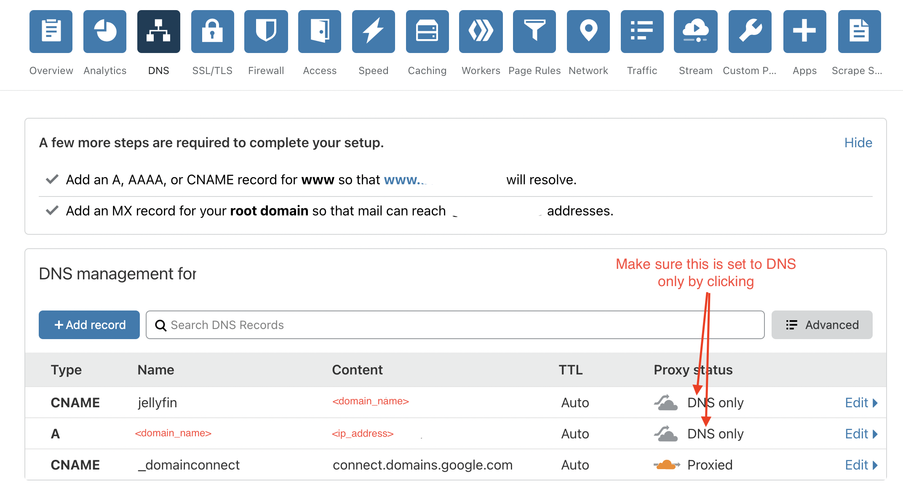
OK, give yourself a pat on the back. You're done with that step, to me that was the hardest step as I hadn't used Cloudflare before.
Nginx Proxy Manager Setup
Here's the final step to setting up Jellyfin and being able to use it remotely. We'll setup Nginx Proxy Manager, which allows us to expose web services on our network and even will provide an SSL certificate from Let's Encrypt.
For this step we'll SSH into the Raspberry Pi and then from the SSH connection you'll need to install some dependencies for Ngninx Proxy Manager with the following commands:
sudo apt-get install -y libffi-dev libssl-dev
sudo apt-get install -y python3 python3-pip
sudo pip3 -v install docker-compose
After the dependenices are installed then we'll create a directory for nginx and a config file. Here are the commands:
mkdir nginx
cd nginx
nano config.json
Next paste the following into the config.json file and save the file -
{
"database": {
"engine": "mysql",
"host": "db",
"name": "npm",
"user": "npm",
"password": "npm",
"port": 3306
}
}
Next we'll create a docker-compose file -
nano docker-compose.yml
and we'll enter the following into the docker-compose file and save -
version: '3'
services:
app:
image: 'jc21/nginx-proxy-manager:latest'
ports:
- '80:80'
- '81:81'
- '443:443'
volumes:
- ./config.json:/app/config/production.json
- ./data:/data
- ./letsencrypt:/etc/letsencrypt
db:
image: 'yobasystems/alpine-mariadb:latest'
environment:
MYSQL_ROOT_PASSWORD: 'npm'
MYSQL_DATABASE: 'npm'
MYSQL_USER: 'npm'
MYSQL_PASSWORD: 'npm'
volumes:
- ./data/mysql:/var/lib/mysql
So the docker-compose.yml file will use docker to create a container called app and will pull the lastest version of Nginx Proxy Manager, it will open up ports 80, 81, and 443. It will link several volumn files such as the config.json file will be linked to the production.json file. Also it will create a container called db that will be running MariaDB with will store the Nginx Proxy Manager's data.
Now we'll actually build those container and run them by issuing the following command -
sudo docker-compose up -d
You'll see the containers being downloaded and built, once this process is finished we'll issue two more command so both the app container and the db container will be started automatically whenever your Raspberry Pi reboots -
sudo docker update --restart always nginx_app_1
sudo docker update --restart always nginx_db_1
Once those are done you MUST reboot the Raspberry Pi (don't skip this step)
sudo reboot now
Wait for a minute or so for your Raspberry Pi to reboot and then SSH back in and validate that the containers are running -
docker ps
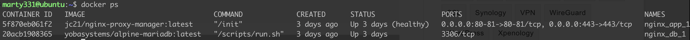
Once the containers have a status of Up, then you are ready to move on to the next step. It may take a minute for them to reach this status, if so just keep running the docker ps command and get the most up to date status.
Now you'll want to open a browser tab and navigate to the following:
http://<raspberry_pi_ip_address>:81
You'll be presented with the login screen for Nginx Proxy Manager. The default email address is admin@example.com and the password is changeme. Login with those credentials and then you can change them to your actual email and create a password.
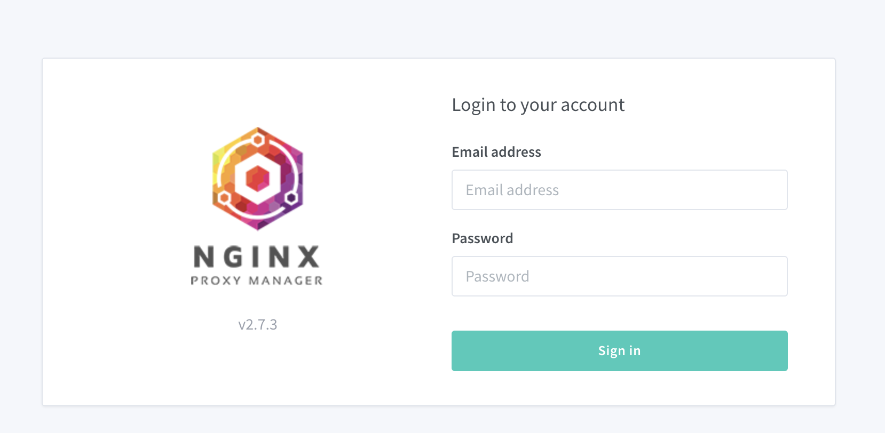
After you have your account squared away, you'll need to setup the Proxy. Click on Hosts > Proxy Hosts > Add Proxy Host.
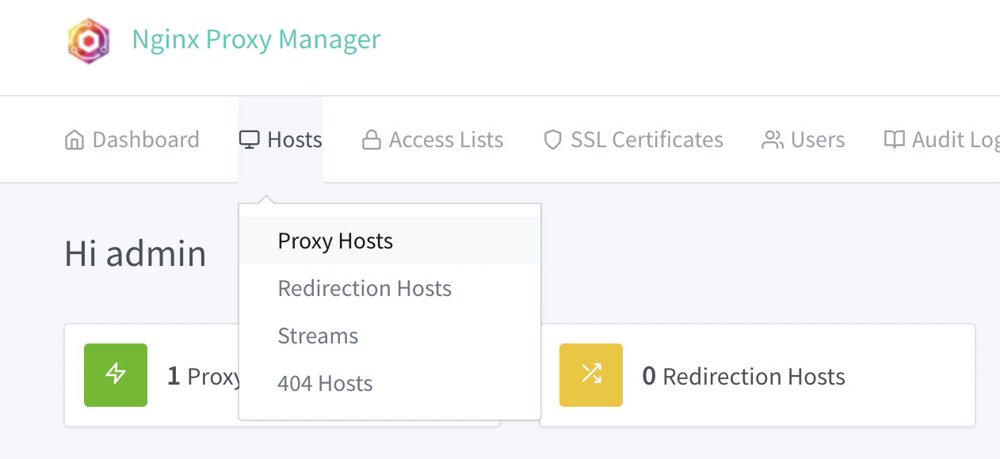
Here you will enter your subdomain and domain like the example below. You'll need your Raspberry Pi IP address and you'll put that in the Forward Hostname/IP, enter 8096 in the Forward Port (this is the default port for Jellyfin), click Block Common Exploits. Before you save click the SSL tab.
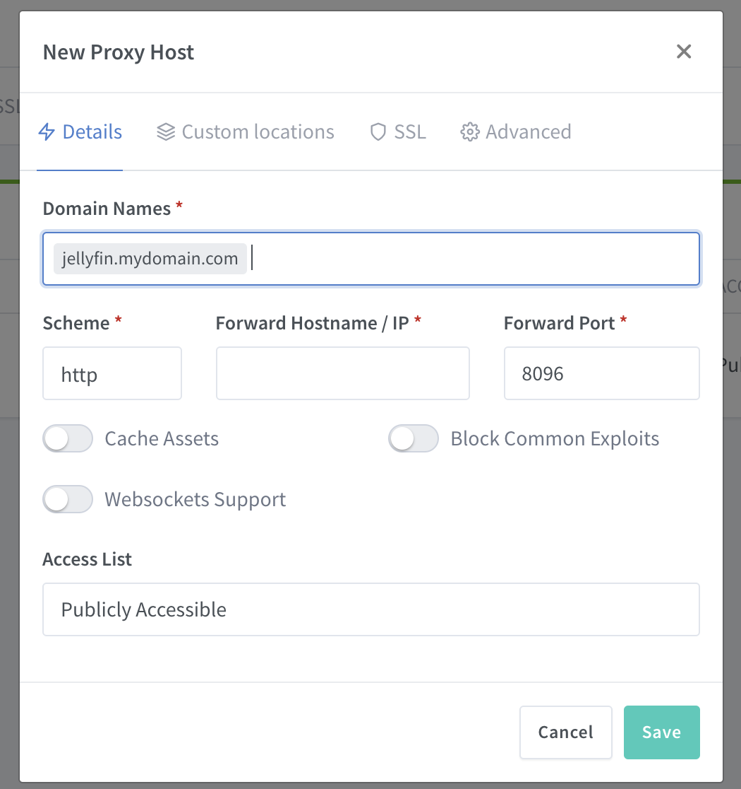
Under SSL Certificate select Request a new SSL Certificate, then select HTTP/2 Support, and I Agree to the Let's Encrypt TOS and finally Save. You will be issued an SSL Certfificate and the Proxy will be setup.
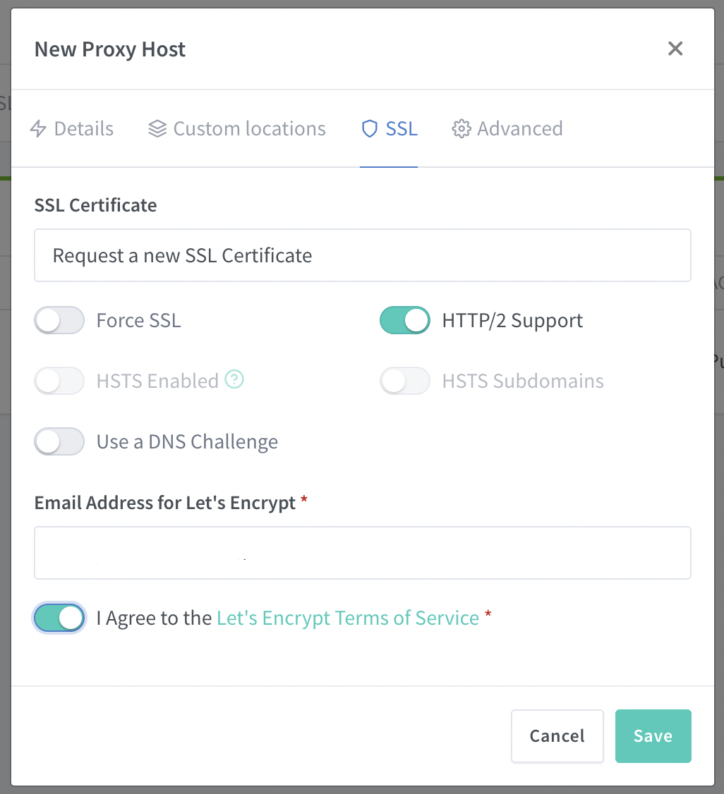
Guess what? You're done! Open a new tab and navigate to your URL https://
So your setup in the browser but you probably want to listen on your phone as well, so download the app from your app store. When you open up the Jellyfin app it will ask you for your server and you'll use that same URL that you naviagated to in your browser - https://
That's it, we're done! I hope you enjoyed this post and I hope it helped you get setup.